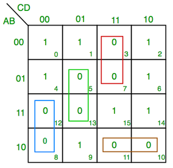

Module 1:
Propositional Logic and Basic Logic Circuits
Goals
Translate back and forth between simple natural language
statements and propositional logic.
Evaluate the truth of propositional logic statements using truth
tables.
Translate back and forth between propositional logic statements
and circuits that assess the truth of those statements.
Run an algorithm to systematically translate from a circuit to a
propositional logic statement.
Build computational systems to solve real problems, using both
propositional logic expressions and equivalent digital logic
circuits.
Identify patterns in Truth Table in order to translate them into
a propositional logic expression.
Definitions
Argument: a sequence of statements aimed at
demonstrating the truth of an assertion.
Conclusion: assertion at the end of the
sequence.
Premises: preceding statements in argument.
A statement (or proposition) is a
sentence that is true or false but not both.
Two digital logic circuits are equivalent if, and
only if, their input/output tables are identical.
A recognizer is a circuit that outputs a 1 for
exactly one particular combination of input signals and
outputs 0’s for all other combinations.
Logical Equivalence
- denote with p ≡ q
- logically equivalent if truth tables match.
- if they have equivalent form symbolically
Tautologies and
Contradictions
- Tautology: a statement that is always
true
- Contradiction: a statement that is always
false
Example:
Truth tables
| F |
F |
F |
F |
T |
T |
| F |
F |
T |
F |
F |
F |
| F |
T |
F |
F |
T |
T |
| F |
T |
T |
F |
F |
F |
| T |
F |
F |
F |
T |
T |
| T |
F |
T |
F |
F |
F |
| T |
T |
F |
T |
T |
T |
| T |
T |
T |
T |
F |
T |
First column should have 2n − 1
Fs and 2n − 1
Ts, for a total of 2n combinations. Each
column is then reduced by half with alternating sets of T and F until
they alternate by 1.
Digital Logic Circuits
On → 1 or True, Off → 0 or False
Circuit Rules
- Never combine two input wires
- A single input wire can be split partway and used as input for two
separate gates
- An output wire can be used as input
- No output gate can feed back into that gate (no recursion !!)
- Gates can have multiple inputs
Finding a Boolean
Expression for A circuit
Start from the last logic gate and slowly build downwards; or start
from the leaf nodes and build upwards. >
Example:
>
 > $$\begin{align*}
x &\equiv (...) \land \lnot ( ...) \\
&\equiv ((...) \lor (...)) \land \lnot (...) \\
& \equiv ((a \oplus c) \lor (a \oplus b)) \land \lnot
((a\oplus b) \oplus (c\oplus d))
\end{align*} $$ > ## Finding a Circuit That Corresponds to a
Given Input/Output Table 1. Identify all rows that out put 1 (true) 2.
Construct an AND expression that links the inputs to produce true - In
input row: P if P is true, ¬P
if P is false 3. Connect the expression for each of the rows with OR -
simplify if possible
> $$\begin{align*}
x &\equiv (...) \land \lnot ( ...) \\
&\equiv ((...) \lor (...)) \land \lnot (...) \\
& \equiv ((a \oplus c) \lor (a \oplus b)) \land \lnot
((a\oplus b) \oplus (c\oplus d))
\end{align*} $$ > ## Finding a Circuit That Corresponds to a
Given Input/Output Table 1. Identify all rows that out put 1 (true) 2.
Construct an AND expression that links the inputs to produce true - In
input row: P if P is true, ¬P
if P is false 3. Connect the expression for each of the rows with OR -
simplify if possible
- Try to generalize and find patterns in rows !! (think real hard you
know)
- group rows with similar characteristics !! 💥
Example: Construct the boolean expresison for
| 1 |
1 |
1 |
1 |
| 1 |
1 |
0 |
0 |
| 1 |
0 |
1 |
1 |
| 1 |
0 |
0 |
1 |
| 0 |
1 |
1 |
0 |
| 0 |
1 |
0 |
0 |
| 0 |
0 |
1 |
0 |
| 0 |
0 |
0 |
0 |
row 1: P ∧ Q ∧ R; Row 3:
P ∧ ¬Q ∧ R;
Row 4: P ∧ ¬Q ∧ ¬R
∴ S ≡ (P∧Q∧R) ∨ (P∧¬Q∧R) ∨ (P∧¬Q∧¬R)
Simplifying Combinational
Circuits
- write cicuit in logic form
- simplify the statement with the Evaluation Rules
Finding
Statement From Truth Table with Karnaugh Map (K-map)
- split the inputs into groups
- 4 inputs → 2 sets of 2 (AB,
CD)
- 3 inputs → 1 set of 2, 1 single
(AB, C)
- Make rows each set, and write out all the combinations (AB, ¬AB, A¬B, ¬A¬B with C and ¬C)
- Simplify with AND between each grouping
- groupings can only be VERTICAL and HORIZONTAL
- P and ¬P cancel out
- Combine each grouping with OR
Example: Karnaugh Map

The green group: ~C and D and C and D and ~A and B and A and B → ~C and D and B
Do the rest for the other groups and we get:
(C∧¬D∧¬B) ∨ (¬C∧¬D∧A) ∨ (¬A∧C∧D) ∨ (¬A∧B∧¬C)
7-segment Displays
 - we will need 4 binary
inputs for a total of 24 = 16 possible outputs. Each
corresponding binary input set will correspond to a configuration in the
display. - Imagine that each input corresponds to the behaviour of a
particular segment - the following example is taken from
worksheet 1 in module 1.
- we will need 4 binary
inputs for a total of 24 = 16 possible outputs. Each
corresponding binary input set will correspond to a configuration in the
display. - Imagine that each input corresponds to the behaviour of a
particular segment - the following example is taken from
worksheet 1 in module 1.
If we examine the bottom left segment, we arrive at the following
truth table >|x3|x2|x1|x0|LED| >|-|-|-|-|-|
>|0|0|0|0|1| >|0|0|0|1|0| >|0|0|1|0|1| >|0|0|1|1|0|
>|0|1|0|0|0| >|0|1|0|1|0| >|0|1|1|0|1| >|0|1|1|1|0|
>|1|0|0|0|1| >|1|0|0|1|0|
from looking real hard, we can simplfy the expression to ¬x0 ∧ ¬(¬x3∧x2∧¬x1∧¬x0)
we realize that 4 is the only exception to the rules ¬x0, hence it must be
¬x0 AND not the row
for 4.
if we simplify further, $$\begin{align*}
\lnot x_0 \land \lnot ( \lnot x_3 \land x_2 \land \lnot x_1 \land \lnot
x_0) &\equiv \lnot x_0 \land ( x_3 \lor \lnot x_2 \lor x_1
\lor x_0)\\
&\equiv \lnot x_0 \land ( x_3 \lor \lnot x_2 \lor x_1)
\end{align*}$$
we used De Morgan’s law to remove the invertor. We then use the
distributive term to remove x0. Alternatively, we can
also think of it as “all even numbers except 4 and
5”
These two are not logically equivalent because the truth tables
are different. However, this doesnt matter as it gets cut off because
only 10 digits are required.
question 7: top-right segment, is only off for 5 and 6 (0101, 0110) $$\begin{align*}
\lnot ((\lnot x_3 \land x_2 \land \lnot x_1 \land x_0 ) \lor (\lnot x_3
\land x_2 \land x_1 \land \lnot x_0)\\
\equiv \lnot ((\lnot x_3 \land x_2) \land (x_1 \oplus x_0))
\end{align*}$$